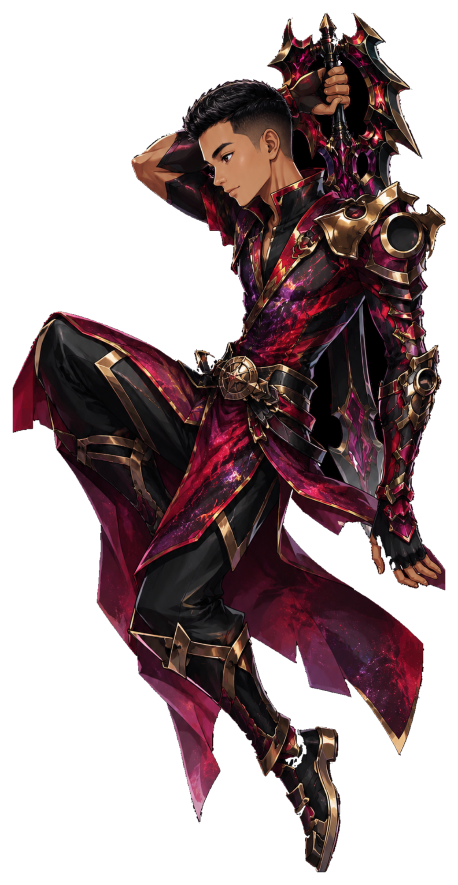

CYBER
STARS
Sentinela Nebular
O Estrategista das Trilhas
A Sentinela Nebular observa, planeja e escolhe o melhor caminho. Sua força está no foco, na estratégia e na clareza para avançar com propósito em cada etapa da jornada.
